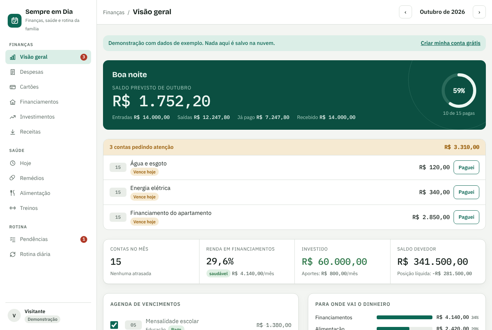
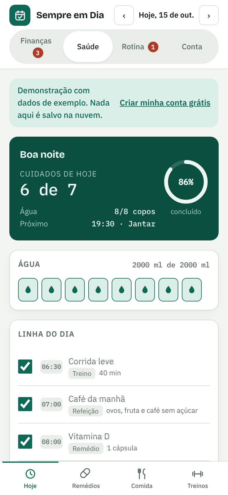
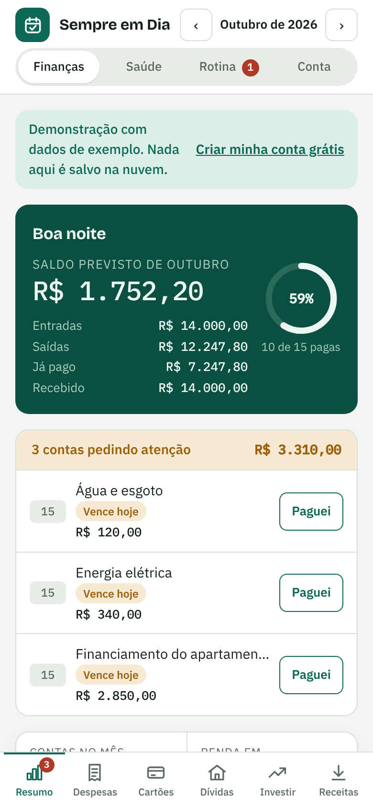

Crie sua conta
Comece o teste grátis, sem informar cartão.
Sua conta e todos os seus dados foram excluídos.
Organize despesas, cartões e financiamentos, lembre dos remédios e treinos e acompanhe as pendências do dia, no computador e no celular.


Você não precisa aprender um sistema complicado para colocar a rotina em ordem.
Comece o teste grátis, sem informar cartão.
Registre suas contas, compromissos e cuidados do dia.
Consulte suas prioridades e o que precisa de atenção em um só painel.
Tudo o que um pai ou uma mãe de família precisa acompanhar no mês, organizado do jeito que você pensa.

Abra no navegador e adicione à tela inicial: ele vira um aplicativo, com ícone próprio.
Experimente sem compromisso. Se gostar, assine pelo Mercado Pago.
Finanças, saúde e rotina, em todos os seus aparelhos.
Não. Você cria a conta com e-mail e senha e usa tudo por dias. O cartão só é pedido se você decidir assinar.
A assinatura é feita pelo Mercado Pago, com cobrança mensal automática no cartão. Se você assinar durante o teste, a primeira cobrança acontece só quando o teste acabar.
Sim, na área Minha conta, com um toque. Você continua usando até o fim do período já pago e não há multa.
Seus dados ficam guardados e você continua vendo tudo, mas não consegue editar. Assinando, volta a usar normalmente.
Cada cliente só acessa os próprios dados, por regra do banco de dados. A conexão é criptografada e você pode excluir sua conta e todos os dados quando quiser.
Sim. Abra o site no navegador do celular e use “Adicionar à tela inicial” para ter o ícone como um aplicativo.
Experimente todas as áreas do Sempre em Dia por 7 dias. Sem cartão no cadastro.
Criar minha conta grátis